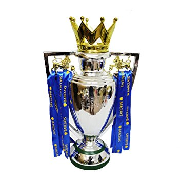
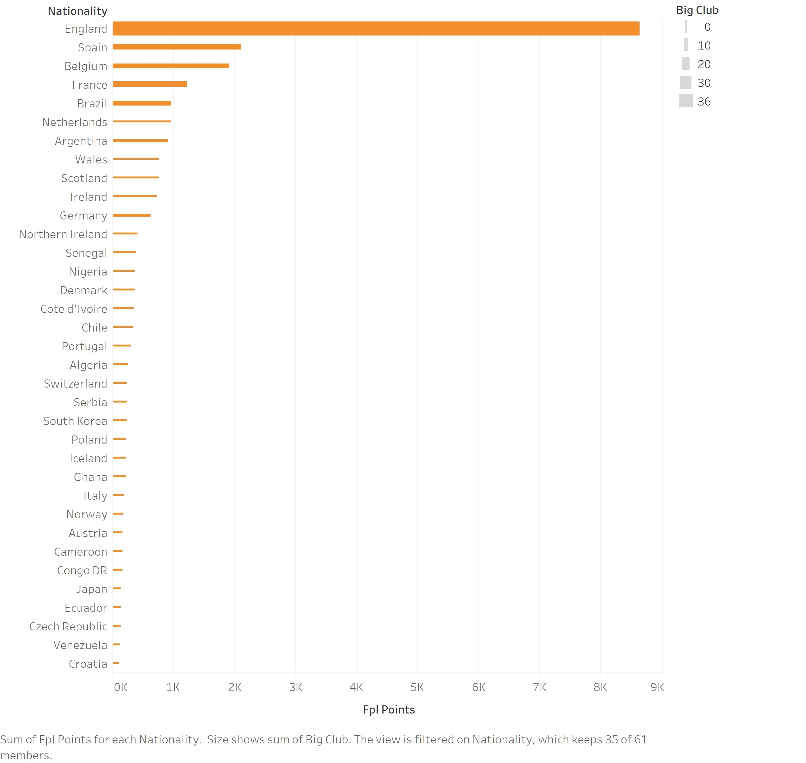
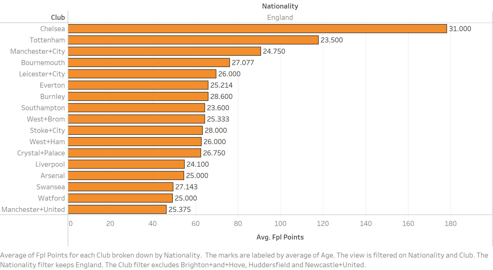
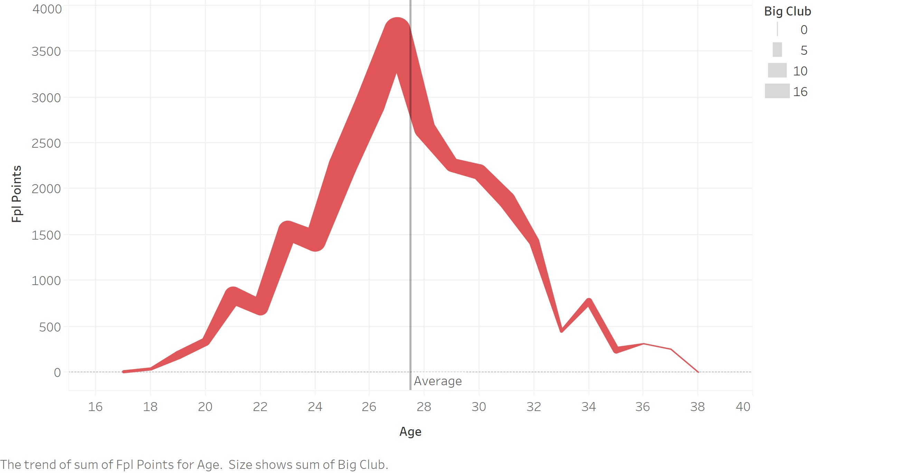
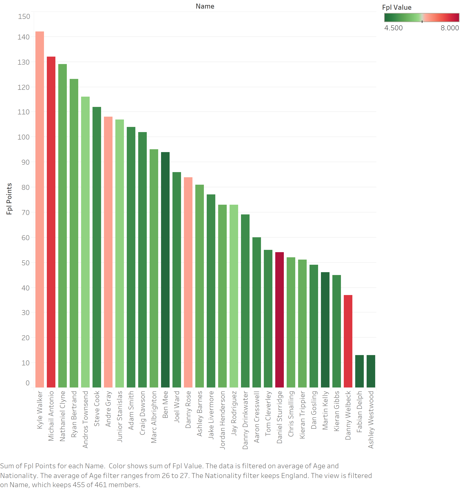
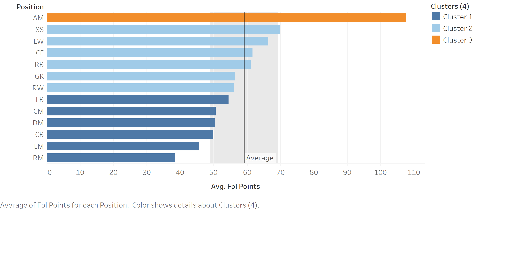
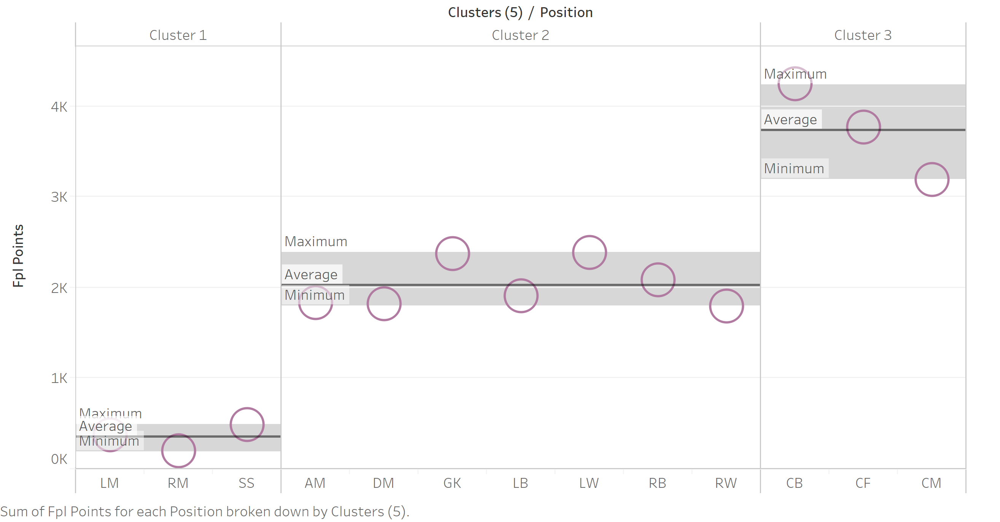
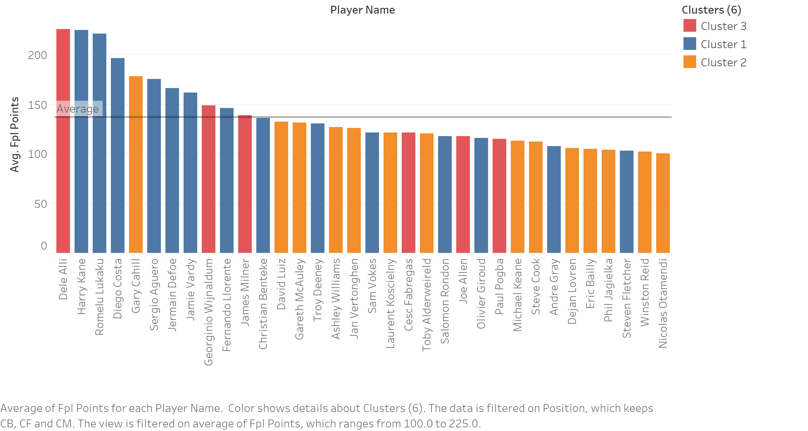

Eazy Premier League
Welcome to Eazy Premier League, where we make earning FPL points easy for you!!!
What are fantasy points?
Fantasy points may not be gold coins, (may be worth more!) but they sure are worth a lot for 42 Million people playing fantasy games every week. This figure keeps rising every year and is a testament to the extreme demand for this sport. It has turned into something every sports enthusiast wants to be part of and surely the data pertaining to these sports speak volumes. When coming to fantasy football, it has the largest fanbase out there. Every week fans battle out by choosing what they think is the best eleven to take part in a global battleground called "Fantasy Premier League". Scoreboards are generated and laymen turn into sports and data gurus. Everybody has a say in it and so came about "Eazy Premier League". Here, we combine passion with data visualization to provide you with the most important stats.
Data Set
{kind=link}
This is the EPL fantasy premier league data set utilized. The data set consists of the premier league 17/18 stats of players,clubs and the fpl figures related to them. The Premier League is the most-watched sports league in the world, broadcast in 212 territories to 643 million homes and a potential TV audience of 4.7 billion people. This data set provides us with FPL stats of 461 players of the 17/18 English premier league. The goal of this project is to find trends within this data set and try to help the customers insight into which players make the biggest impact and yield the highest points in one season. The list of columns are :
- Player Name
- Club Name
- Age
- Position
- FPL Value (the cost of placing this player in your team)
- FPL Selection (the percentage of people selecting this player in their team)
- FPL Points (the amount of points accumulated by this player in that year)
- Nationality
Questions
Q1.1 Which players have the most impact?
{kind=link}
Right off the bat, we want to know which players make the most impact region wise. By identifying the regions which have the highest impact, we can narrow down our search. Seeing the graph, it is obvious that English players have the highest impact followed by players from Spain. It is not a surprise that English players in the "English Premier League" are dominating. The size of the bars provide us with insights into if they are part of the big clubs or not. Let us go deeper into understanding the impact of these English players.
Q1.2 Which English players have the most impact? 
{kind=link}
After seeing the huge impact of the English players in EPL, we want to learn more about them. In the above visualization, we can see that we have now filtered based on the English nationality and are displaying the average Fpl points they have gained. The labels presented are the average ages in each team. Chelsea, Tottenham and Manchester City have the highest average players per English players but there is something interesting with respect to the average ages in each team. Let us now see how age impacts the player's performance.
Dont forget to click the graphs to get a better view!
Q2.1 Which age group has the most impact?
{kind=link}
Age plays a very big part in any sport. Each sport has a different prime age for performance. It could range from 19 to even 40(Tiger Woods is 42!). The graph above displays the average ages of all players in the EPL with respect to the total FPL points they have gained. You can see that there is steady growth starting from 17 to 27 and then a sudden decline. The average age depicted is 27.5 and peak being 27. This graph helps us in understanding the criteria for choosing players based on the age. Choosing a player in the peak clusters is the best for your team. We see this better in the next visualizati
Q2.2 Which age group has the most impact and which positions are they in?

This visualization gives a clearer picture of its parent graph. You can see that this time, the criteria are given for the position each player plays in. The position category depicts where the player plays. As a player reaches the age of 27, it is better to pick a player who is either in the offensive region or the midfield. As the player's age increases, offensive players do not pick up as many points and is more recommended to pick a goalkeeper or a defensive player. This graph helps us understand the different positions with respect to the player's age.
- Offensive
- Midfield
- Defensive
- Goalkeeper
Q2.3 Which English players in the best performing age group and with the best fpl value produce the most fpl points?
{kind=link}
After understanding how important age group and nationality is, we now try to merge the two data fields and depict the intersection of these two prime trends. FPL value plays a big role in selection of players since many times we might not have sufficient funds to select all the top players we want. In this situation ,we would want a low cost high yield player. The green bars depict players below the average fpl value. These players are high yield low cost. We can see that in this region Nathaniel Clyne, Ryan Bertrand, Androws Townsend and Steve Cook are just few of the best players you can select.
Q3.1 Which positions are getting the highest average points?
{kind=link}
We would like to turn our attention to positions once again. This graph helps us visualize the best positions with respect to average points. Although average points for AM and SS are the best, we would like to see how the graph changes when we change the parameter to the sum of points.
Q3.2 Which positions are getting the highest sum of points?
{kind=link}
There is a drastic change when we modify the aggregation. Looks like although the average points for CB, CF and CM are low , they provide the highest points in total. The average may be low but there are some top performers in that position. Lets dive deeper!
Q3.3 Which players in those positions are getting the highest average points?
{kind=link}
Filtering on the 3 positions ( CB, CF, CM) we see the best players yielding the highest points. CF and CB have the same number of players in the cluster (14) and the CM are only 6 although Delle Alli leads the number of fpl points. Clustering based on positions helps us pick the best out of each and provides us with insights into what our team composition can consist of.